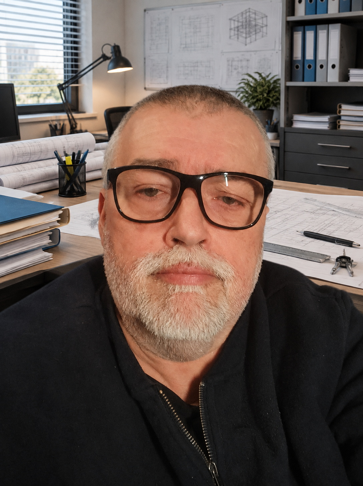

01
RÉPARER
Identifier les difficultés de notre société et réfléchir aux moyens de restaurer ce qui ne fonctionne plus suffisamment.
Pons & communes voisines · Charente-Maritime
Réparer. Reconstruire. Préparer.
Une initiative citoyenne indépendante et non partisane pour ouvrir un espace de réflexion, de dialogue et de propositions autour de l'avenir de notre société et de nos territoires.

Partir des réalités vécues par les habitants.
Faire émerger des propositions citoyennes.
Anticiper les défis de demain et les générations futures.
L'initiative
FRANCE 2027-2037 est une initiative citoyenne indépendante qui souhaite ouvrir un espace de réflexion, de dialogue et de propositions autour de l'avenir de notre société et de nos territoires.
Son ambition est simple : permettre aux citoyens de reprendre une place active dans la réflexion sur les grandes questions qui concernent leur quotidien et les générations futures.
Cette démarche est indépendante de tout parti politique. Elle se veut ouverte à toutes les sensibilités, dans le respect des opinions et du débat démocratique.

Notre philosophie
Identifier les difficultés de notre société et réfléchir aux moyens de restaurer ce qui ne fonctionne plus suffisamment.
Faire émerger des propositions concrètes pour renforcer la solidarité, les services de proximité et la cohésion sociale.
Anticiper les défis de demain et penser l'avenir des générations futures.
Il ne s'agit pas de prétendre détenir toutes les réponses, mais de construire une réflexion collective à partir de la réalité vécue par les citoyens.
Pourquoi commencer à Pons ?
Pons et les communes voisines constituent le premier territoire de lancement de cette initiative.
Nous souhaitons partir du terrain, écouter les habitants et prendre en compte les réalités locales avant d'élargir progressivement la réflexion.
La démarche veut donner la parole à toutes les générations :
Chaque habitant doit pouvoir apporter son regard et contribuer au débat.
Les dix chantiers
FRANCE 2027-2037 entend organiser son travail autour de dix grands chantiers consacrés aux enjeux de société, aux besoins des territoires et à la préparation de l'avenir.
Enjeux de société
Territoires et proximité
Solidarité et cohésion sociale
Services de proximité
Jeunesse et générations futures
Familles et actifs
Associations et acteurs locaux
Participation citoyenne
Anticipation des défis
Propositions et faisabilité
Ces intitulés servent ici à présenter la structure générale annoncée dans le document. Les dix chantiers ont vocation à être approfondis progressivement, en associant les contributions citoyennes, les réalités de terrain et les connaissances disponibles.
Les propositions formulées resteront des propositions citoyennes : elles ne seront jamais présentées comme des mesures officielles ou déjà adoptées.
Notre méthode de travail
des rencontres citoyennes ouvertes au dialogue.
les attentes et les préoccupations des habitants.
des priorités locales.
les propositions et leur faisabilité.
des contributions citoyennes argumentées.
lorsque cela sera pertinent, ces contributions aux élus et aux institutions concernés.
Un questionnaire accompagne la démarche afin de recueillir les avis des habitants.
Accéder au questionnairePremière étape
À partir du 15 janvier 2027
La première réunion aurait pour objectifs de :
Participation envisagée : environ 15 à 20 personnes.
Vidéo de présentation — à regarder directement depuis le blog.
Indépendance et responsabilité
FRANCE 2027-2037 ne souhaite pas se substituer aux élus, aux collectivités ou aux institutions.
Son rôle est de favoriser l'expression citoyenne, de faire remonter les préoccupations du terrain et de contribuer au débat public.
L'initiative entend travailler dans un esprit de respect, de transparence, de dialogue et de responsabilité.
Notre conviction
FRANCE 2027-2037 souhaite faire de Pons et de ses communes voisines un premier espace de dialogue et de participation citoyenne.